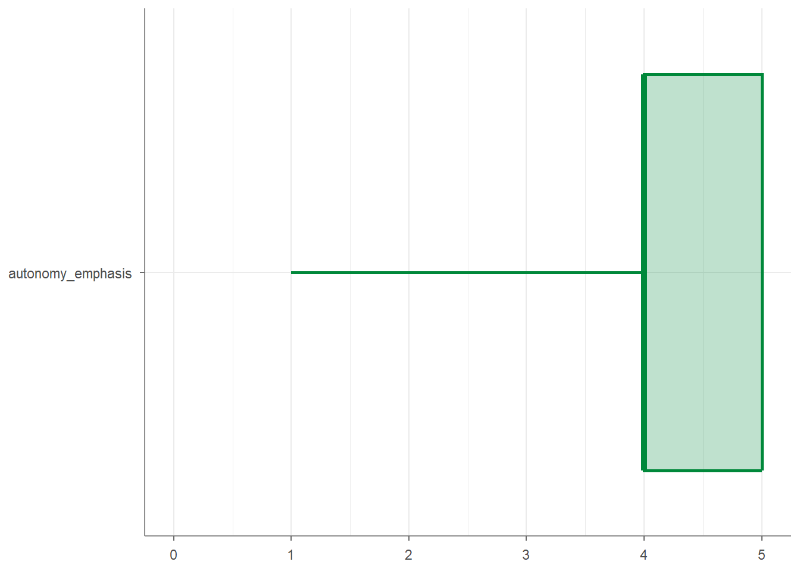
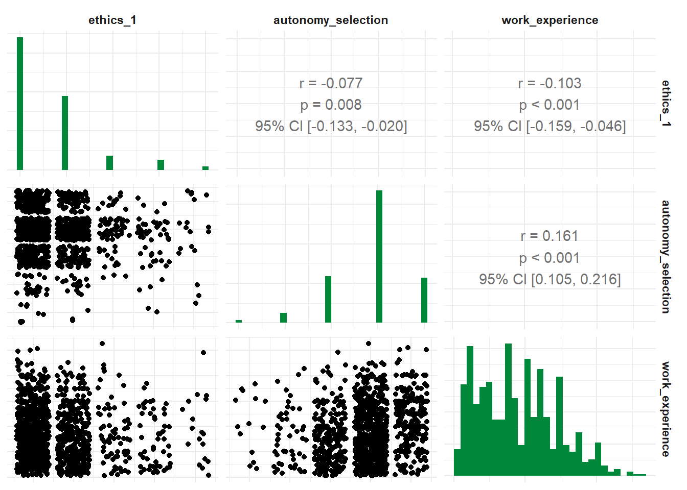
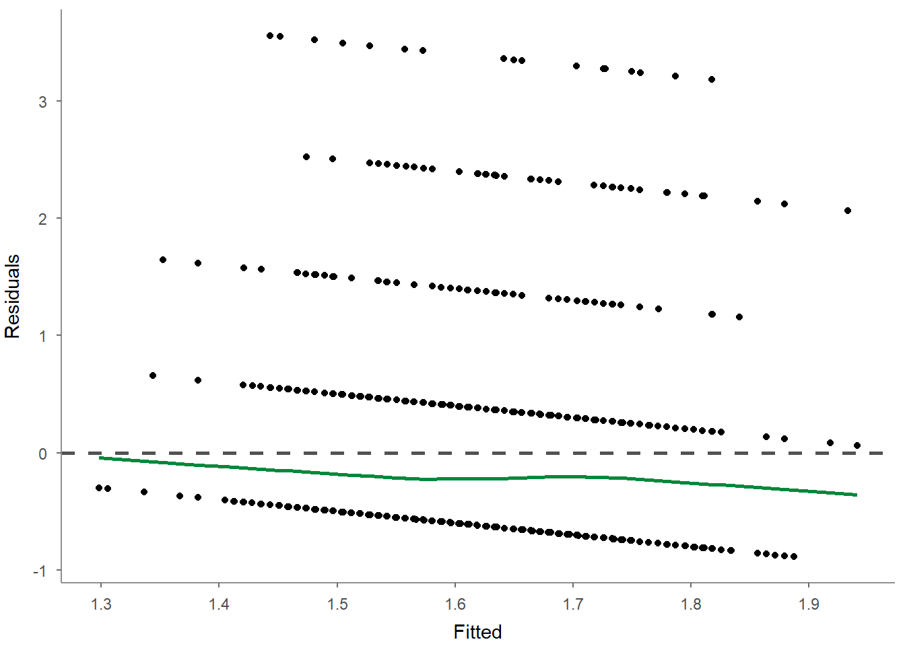
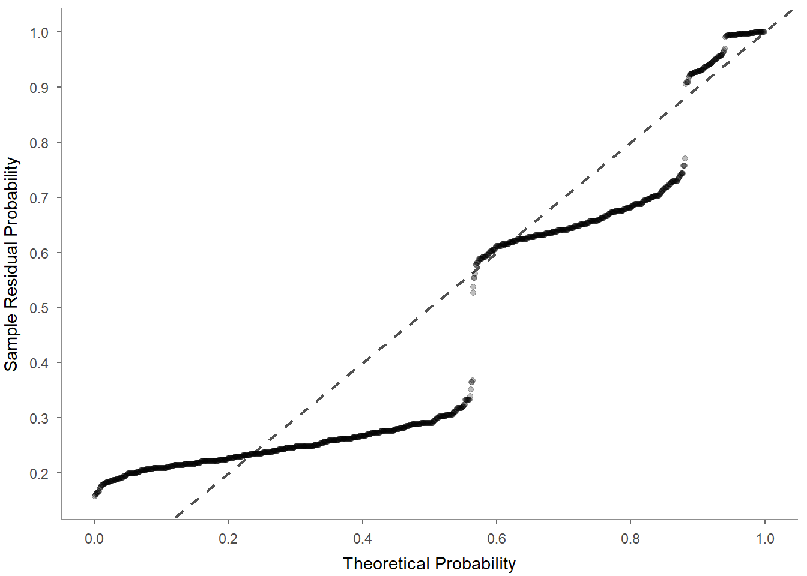
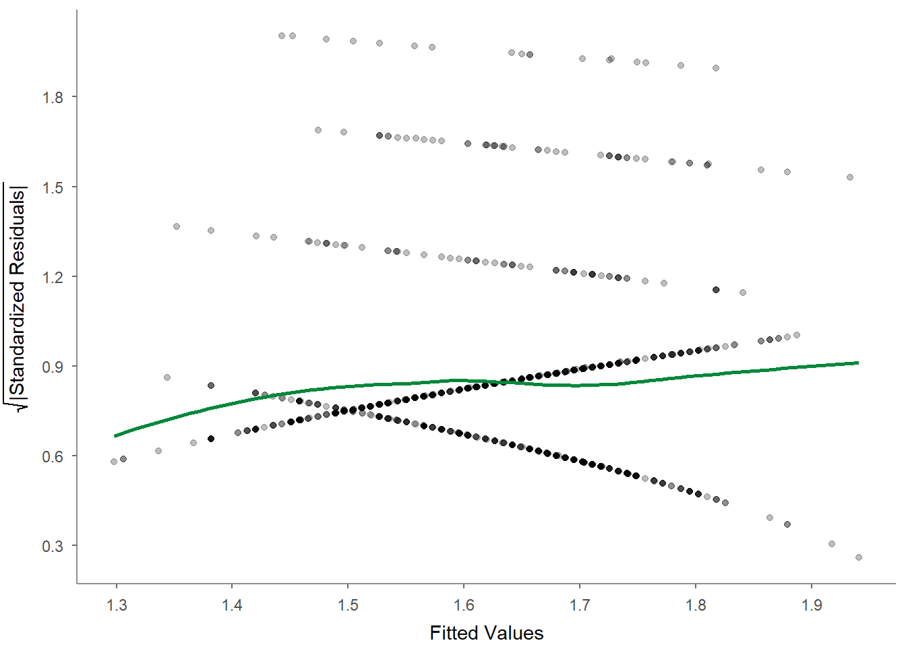

9 Tutorial: Data analysis with tidycomm
After working through Tutorial 9, you’ll…
- learn how to use the
tidycommpackage to inspect a new data set and quickly obtain an overview of both numeric and categorical variables. - perform descriptive and bivariate analyses, construct and transform measures, and run common significance tests and regression models.
- get a first glimpse into quick visualizations of variables and model results using
tidycomm. - see how
tidycommcan also support more specialized workflows such as intercoder reliability analysis.
9.1 Is tidycomm a niche package?
Since tidycomm was developed specifically for common data analysis tasks in social science and communication research, you might reasonably ask: Is this a package that is actually used beyond this course?
As a co-creator and current maintainer of tidycomm, I am of course not entirely unbiased here. But we can look at some data. CRAN records how often packages are downloaded, which gives us at least a rough indication of how widely a package is being used.
Let’s take a look at the monthly downloads of tidycomm over the last 12 complete months:
# install.packages("cranlogs") # run only the first time
library(cranlogs)
# Download statistics for tidycomm during the last year
tidycomm_downloads <-
cranlogs::cran_downloads(
packages = "tidycomm",
from = Sys.Date() - 365,
to = Sys.Date()
) %>%
mutate(month = format(date, "%Y-%m")) %>%
group_by(month) %>%
summarize(downloads = sum(count))
tidycomm_downloads## # A tibble: 13 × 2
## month downloads
## <chr> <dbl>
## 1 2025-08 73
## 2 2025-09 1246
## 3 2025-10 804
## 4 2025-11 533
## 5 2025-12 611
## 6 2026-01 1050
## 7 2026-02 572
## 8 2026-03 600
## 9 2026-04 623
## 10 2026-05 647
## 11 2026-06 776
## 12 2026-07 755
## 13 2026-08 352The point of this little detour is not to claim that download counts tell us exactly how many people use tidycomm – they do not. A single user, a server, or an automated system can download a package more than once. Still, the numbers provide a useful reality check: tidycomm is no longer just a small package used in one course or by a handful of researchers. It has developed a solid user base, especially in the DACH region.
Most importantly, I simply hope that you will enjoy working with tidycomm and find it useful for your own research and data analysis projects. We are constantly expanding and updating the package to cover more and more common research tasks, so stay tuned over the coming years. :)
9.2 Getting started with tidycomm
First, load the package:
For most of this tutorial, we will use the WoJ survey data set that is included in tidycomm:
The tidycomm package provides convenience functions for common data modification and analysis tasks in social science and communication research. This includes functions for inspecting data, descriptive and bivariate analysis, scale construction and transformation, significance tests, regression models, and intercoder reliability analysis.
9.3 First data inspection: descriptive analysis
When you open a new dataset, you will usually want to know what it looks like: Which variables are numeric or categorical? How much data is missing? What are typical values, ranges, and distributions?
This is a particularly convenient entry point into tidycomm, because you can obtain an overview of many variables with very little code.
9.3.1 Inspect the whole data set at once
For all numeric variables, simply call describe() without specifying any variable names:
## # A tibble: 11 × 15
## Variable N Missing M SD Min Q25 Mdn Q75 Max Range
## * <chr> <int> <int> <dbl> <dbl> <dbl> <dbl> <dbl> <dbl> <dbl> <dbl>
## 1 autonomy_sele… 1197 3 3.88 0.803 1 4 4 4 5 4
## 2 autonomy_emph… 1195 5 4.08 0.793 1 4 4 5 5 4
## 3 ethics_1 1200 0 1.63 0.892 1 1 1 2 5 4
## 4 ethics_2 1200 0 3.21 1.26 1 2 4 4 5 4
## 5 ethics_3 1200 0 2.39 1.13 1 2 2 3 5 4
## 6 ethics_4 1200 0 2.58 1.25 1 1.75 2 4 5 4
## 7 work_experien… 1187 13 17.8 10.9 1 8 17 25 53 52
## 8 trust_parliam… 1200 0 3.05 0.811 1 3 3 4 5 4
## 9 trust_governm… 1200 0 2.82 0.854 1 2 3 3 5 4
## 10 trust_parties 1200 0 2.42 0.736 1 2 2 3 4 3
## 11 trust_politic… 1200 0 2.52 0.712 1 2 3 3 4 3
## # ℹ 4 more variables: CI_95_LL <dbl>, CI_95_UL <dbl>, Skewness <dbl>,
## # Kurtosis <dbl>This returns descriptive statistics such as the number of valid and missing cases, mean, standard deviation, minimum, quartiles, median, maximum, and range for all numeric variables in the data set.
For all categorical variables, the equivalent function is describe_cat():
## # A tibble: 4 × 6
## Variable N Missing Unique Mode Mode_N
## * <chr> <int> <int> <dbl> <chr> <int>
## 1 country 1200 0 5 Denmark 376
## 2 reach 1200 0 4 National 617
## 3 employment 1200 0 3 Full-time 902
## 4 temp_contract 1001 199 2 Permanent 948This gives you a compact overview of categorical variables, including the number of valid and missing cases, the number of unique categories, and the most frequent category.
If the output is larger than your screen, you can also inspect it in RStudio’s data viewer. Since View() is interactive, do not evaluate this line when rendering the tutorial:
9.3.2 Inspect selected continuous variables in more detail
Once you have a broad overview, you will often want to inspect a smaller set of variables more closely. The describe() function outputs several measures of central tendency and variability for all variables named in the function call.
## # A tibble: 3 × 15
## Variable N Missing M SD Min Q25 Mdn Q75 Max Range
## * <chr> <int> <int> <dbl> <dbl> <dbl> <dbl> <dbl> <dbl> <dbl> <dbl>
## 1 autonomy_empha… 1195 5 4.08 0.793 1 4 4 5 5 4
## 2 ethics_1 1200 0 1.63 0.892 1 1 1 2 5 4
## 3 work_experience 1187 13 17.8 10.9 1 8 17 25 53 52
## # ℹ 4 more variables: CI_95_LL <dbl>, CI_95_UL <dbl>, Skewness <dbl>,
## # Kurtosis <dbl>You can also group the data before describing a variable. This is useful when your first question is whether different groups look descriptively different:
## # A tibble: 5 × 16
## # Groups: country [5]
## country Variable N Missing M SD Min Q25 Mdn Q75 Max Range
## * <fct> <chr> <int> <int> <dbl> <dbl> <dbl> <dbl> <dbl> <dbl> <dbl> <dbl>
## 1 Austria autonom… 205 2 4.19 0.614 2 4 4 5 5 3
## 2 Denmark autonom… 375 1 3.90 0.856 1 4 4 4 5 4
## 3 Germany autonom… 172 1 4.34 0.818 1 4 5 5 5 4
## 4 Switze… autonom… 233 0 4.07 0.694 1 4 4 4 5 4
## 5 UK autonom… 210 1 4.08 0.838 2 4 4 5 5 3
## # ℹ 4 more variables: CI_95_LL <dbl>, CI_95_UL <dbl>, Skewness <dbl>,
## # Kurtosis <dbl>And you can create a quick visualization by applying visualize() to the result:

9.3.3 Inspect percentiles and distributions
Sometimes means and standard deviations are not enough. The tab_percentiles() function lets you inspect the distribution of a continuous variable in more detail:
## # A tibble: 1 × 11
## Variable p10 p20 p30 p40 p50 p60 p70 p80 p90 p100
## * <chr> <dbl> <dbl> <dbl> <dbl> <dbl> <dbl> <dbl> <dbl> <dbl> <dbl>
## 1 autonomy_emphasis 3 4 4 4 4 4 4 5 5 5You can tabulate percentiles for more than one variable:
## # A tibble: 2 × 11
## Variable p10 p20 p30 p40 p50 p60 p70 p80 p90 p100
## * <chr> <dbl> <dbl> <dbl> <dbl> <dbl> <dbl> <dbl> <dbl> <dbl> <dbl>
## 1 autonomy_emphasis 3 4 4 4 4 4 4 5 5 5
## 2 ethics_1 1 1 1 1 1 2 2 2 3 5You can also specify your own percentiles:
## # A tibble: 2 × 5
## Variable p16 p50 p84 p100
## * <chr> <dbl> <dbl> <dbl> <dbl>
## 1 autonomy_emphasis 3 4 5 5
## 2 ethics_1 1 1 2 5And visualize them:

9.3.4 Inspect selected categorical variables in more detail
For a compact summary of selected categorical variables, pass their names to describe_cat():
## # A tibble: 3 × 6
## Variable N Missing Unique Mode Mode_N
## * <chr> <int> <int> <dbl> <chr> <int>
## 1 country 1200 0 5 Denmark 376
## 2 employment 1200 0 3 Full-time 902
## 3 temp_contract 1001 199 2 Permanent 948If you want the actual distribution across categories, use tab_frequencies():
## # A tibble: 3 × 5
## employment n percent cum_n cum_percent
## * <chr> <int> <dbl> <int> <dbl>
## 1 Freelancer 172 0.143 172 0.143
## 2 Full-time 902 0.752 1074 0.895
## 3 Part-time 126 0.105 1200 1You can inspect several categorical variables at once:
## # A tibble: 15 × 6
## employment country n percent cum_n cum_percent
## * <chr> <fct> <int> <dbl> <int> <dbl>
## 1 Freelancer Austria 16 0.0133 16 0.0133
## 2 Freelancer Denmark 85 0.0708 101 0.0842
## 3 Freelancer Germany 29 0.0242 130 0.108
## 4 Freelancer Switzerland 10 0.00833 140 0.117
## 5 Freelancer UK 32 0.0267 172 0.143
## 6 Full-time Austria 165 0.138 337 0.281
## 7 Full-time Denmark 275 0.229 612 0.51
## 8 Full-time Germany 139 0.116 751 0.626
## 9 Full-time Switzerland 154 0.128 905 0.754
## 10 Full-time UK 169 0.141 1074 0.895
## 11 Part-time Austria 26 0.0217 1100 0.917
## 12 Part-time Denmark 16 0.0133 1116 0.93
## 13 Part-time Germany 5 0.00417 1121 0.934
## 14 Part-time Switzerland 69 0.0575 1190 0.992
## 15 Part-time UK 10 0.00833 1200 1And, just like with the other tidycomm functions, the result can be visualized quickly:

At this point, you already have a useful overview of your data. A sensible next step is to prepare the variables that you actually want to analyze.
9.4 Prepare variables and measures
9.4.1 Build indices and check their reliability
In survey research, several questionnaire items are often combined into a single scale or index. tidycomm provides a convenient workflow to create such indices and inspect their internal consistency.
The tidycomm package provides a workflow to quickly add mean or sum
indices to a data set and compute reliability estimates
for those newly created indices. The package offers two key functions:
add_index()andget_reliability()
9.4.1.1 add_index():
The add_index() function adds a mean or sum index of the specified
variables to the data. The second argument (or first, if used in a pipe)
is the name of the index variable to be created. For example, if you
want to create a mean index named ‘ethical_concerns’ using variables
‘ethics_1’ to ‘ethics_4’, you can use the following code:
WoJ %>%
add_index(ethical_concerns, ethics_1, ethics_2, ethics_3, ethics_4) %>%
dplyr::select(ethical_concerns,
ethics_1,
ethics_2,
ethics_3,
ethics_4)## # A tibble: 1,200 × 5
## ethical_concerns ethics_1 ethics_2 ethics_3 ethics_4
## <dbl> <dbl> <dbl> <dbl> <dbl>
## 1 2 2 3 2 1
## 2 1.5 1 2 2 1
## 3 2.25 2 4 2 1
## 4 1.75 1 3 1 2
## 5 2 2 3 2 1
## 6 3.25 2 4 4 3
## 7 2 1 3 2 2
## 8 3.5 2 4 4 4
## 9 1.75 1 2 1 3
## 10 3.25 1 4 4 4
## # ℹ 1,190 more rowsTo create a sum index instead, set type = "sum":
WoJ %>%
add_index(ethical_flexibility, ethics_1, ethics_2, ethics_3, ethics_4, type = "sum") %>%
dplyr::select(ethical_flexibility,
ethics_1,
ethics_2,
ethics_3,
ethics_4)## # A tibble: 1,200 × 5
## ethical_flexibility ethics_1 ethics_2 ethics_3 ethics_4
## <dbl> <dbl> <dbl> <dbl> <dbl>
## 1 8 2 3 2 1
## 2 6 1 2 2 1
## 3 9 2 4 2 1
## 4 7 1 3 1 2
## 5 8 2 3 2 1
## 6 13 2 4 4 3
## 7 8 1 3 2 2
## 8 14 2 4 4 4
## 9 7 1 2 1 3
## 10 13 1 4 4 4
## # ℹ 1,190 more rowsMake sure to save your index back into your original data set if you want to keep it for later use:
9.4.1.2 get_reliability()
The get_reliability() function computes reliability/internal
consistency estimates for indices created with add_index(). The
function outputs Cronbach’s α along with descriptives and index
information.
## # A tibble: 1 × 5
## Index Index_of M SD Cronbachs_Alpha
## * <chr> <chr> <dbl> <dbl> <dbl>
## 1 ethical_concerns ethics_1, ethics_2, ethics_3, et… 2.45 0.777 0.612By default, if you pass no further arguments to the function, it will
automatically compute reliability estimates for all indices created with
add_index() found in the data.
## # A tibble: 1 × 5
## Index Index_of M SD Cronbachs_Alpha
## * <chr> <chr> <dbl> <dbl> <dbl>
## 1 ethical_concerns ethics_1, ethics_2, ethics_3, et… 2.45 0.777 0.6129.4.2 Transform and recode measures
Before running analyses, you may also need to reverse, standardize, recode, or categorize variables.
tidycomm provides several functions to transform, standardize, and recode variables. By default, these functions retain the original variable and create a new one with a modified name:
reverse_scale()simply turns a scale upside down; the new variable gets the suffix_revminmax_scale()down- or upsizes a scale to a new minimum/maximum while retaining distances; the new range is added to the variable namecenter_scale()subtracts the mean from each individual data point to center a scale at a mean of 0; the new variable gets the suffix_centeredz_scale()works just likecenter_scale()but also divides the result by the standard deviation to obtain a standard deviation of 1 and make it comparable to other z-standardized distributions; the new variable gets the suffix_zsetna_scale()defines specific values as missing values; the new variable gets the suffix_narecode_cat_scale()recodes categorical variables into new categorical variables; the new variable gets the suffix_reccategorize_scale()turns a continuous variable into a categorical variable; the new variable gets the suffix_catdummify_scale()creates dummy variables from categorical variables; each new variable combines the original variable name and the respective category
Thus, by default, the original variable remains in the data set and the transformed version is added as a new variable. For most of these functions, you can also use the name argument to choose a different name manually.
All of these functions also have an overwrite argument. Setting overwrite = TRUE replaces the original variable with the transformed or recoded version instead of retaining both versions. This is useful when you no longer need the original values. If you want to keep both the original and transformed versions, leave overwrite at its default setting, FALSE.
For dummify_scale(), the logic is slightly different because one categorical variable can be turned into several dummy variables. Here, overwrite = TRUE removes the original categorical variable and retains the newly created dummy variables.
9.4.2.1 reverse_scale()
The easiest one is to reverse your scale. You can just specify the scale and define the scale’s lower and upper end. Take autonomy_emphasis as an example that originally ranges from 1 to 5. We will reverse it to range from 5 to 1.
The function adds a new column named autonomy_emphasis_rev:
WoJ %>%
reverse_scale(autonomy_emphasis,
lower_end = 1,
upper_end = 5) %>%
dplyr::select(autonomy_emphasis,
autonomy_emphasis_rev)## # A tibble: 1,200 × 2
## autonomy_emphasis autonomy_emphasis_rev
## <dbl> <dbl>
## 1 4 2
## 2 4 2
## 3 4 2
## 4 5 1
## 5 4 2
## 6 4 2
## 7 4 2
## 8 3 3
## 9 5 1
## 10 4 2
## # ℹ 1,190 more rowsAlternatively, you can also specify the new column name manually:
WoJ %>%
reverse_scale(autonomy_emphasis,
name = "new_emphasis",
lower_end = 1,
upper_end = 5) %>%
dplyr::select(autonomy_emphasis,
new_emphasis)## # A tibble: 1,200 × 2
## autonomy_emphasis new_emphasis
## <dbl> <dbl>
## 1 4 2
## 2 4 2
## 3 4 2
## 4 5 1
## 5 4 2
## 6 4 2
## 7 4 2
## 8 3 3
## 9 5 1
## 10 4 2
## # ℹ 1,190 more rowsIf you do not want to create a new variable, you can instead overwrite the original variable:
WoJ %>%
reverse_scale(autonomy_emphasis,
lower_end = 1,
upper_end = 5,
overwrite = TRUE) %>%
dplyr::select(autonomy_emphasis)## # A tibble: 1,200 × 1
## autonomy_emphasis
## <dbl>
## 1 2
## 2 2
## 3 2
## 4 1
## 5 2
## 6 2
## 7 2
## 8 3
## 9 1
## 10 2
## # ℹ 1,190 more rows9.4.2.2 minmax_scale()
minmax_scale() takes your continuous scale to a new range. For example, convert the 1–5 scale of autonomy_emphasis to a 1–10 scale while keeping the distances:
WoJ %>%
minmax_scale(autonomy_emphasis,
change_to_min = 1,
change_to_max = 10) %>%
dplyr::select(autonomy_emphasis,
autonomy_emphasis_1to10)## # A tibble: 1,200 × 2
## autonomy_emphasis autonomy_emphasis_1to10
## <dbl> <dbl>
## 1 4 7.75
## 2 4 7.75
## 3 4 7.75
## 4 5 10
## 5 4 7.75
## 6 4 7.75
## 7 4 7.75
## 8 3 5.5
## 9 5 10
## 10 4 7.75
## # ℹ 1,190 more rows9.4.2.3 center_scale()
center_scale() moves your continuous scale around a mean of 0:
WoJ %>%
center_scale(autonomy_selection) %>%
dplyr::select(autonomy_selection,
autonomy_selection_centered)## # A tibble: 1,200 × 2
## autonomy_selection autonomy_selection_centered
## <dbl> <dbl>
## 1 5 1.12
## 2 3 -0.876
## 3 4 0.124
## 4 4 0.124
## 5 4 0.124
## 6 4 0.124
## 7 4 0.124
## 8 3 -0.876
## 9 5 1.12
## 10 2 -1.88
## # ℹ 1,190 more rows9.4.2.4 z_scale()
Moreover, z_scale() does more or less the same but standardizes the outcome. To visualize this, we look at it using a visualized tab_frequencies():
WoJ %>%
z_scale(autonomy_selection) %>%
tab_frequencies(autonomy_selection,
autonomy_selection_z) %>%
visualize()
9.4.2.5 setna_scale()
To set a specific value to NA:
WoJ %>%
setna_scale(autonomy_emphasis, value = 5) %>%
dplyr::select(autonomy_emphasis,
autonomy_emphasis_na)## # A tibble: 1,200 × 2
## autonomy_emphasis autonomy_emphasis_na
## <dbl> <dbl>
## 1 4 4
## 2 4 4
## 3 4 4
## 4 5 NA
## 5 4 4
## 6 4 4
## 7 4 4
## 8 3 3
## 9 5 NA
## 10 4 4
## # ℹ 1,190 more rows9.4.2.6 recode_cat_scale()
For recoding categorical scales, you can use recode_cat_scale():
WoJ %>%
dplyr::select(country) %>%
recode_cat_scale(
country,
assign = c("Germany" = "german",
"Switzerland" = "swiss"),
other = "other"
)## # A tibble: 1,200 × 2
## country country_rec
## * <fct> <fct>
## 1 Germany german
## 2 Germany german
## 3 Switzerland swiss
## 4 Switzerland swiss
## 5 Austria other
## 6 Switzerland swiss
## 7 Germany german
## 8 Denmark other
## 9 Switzerland swiss
## 10 Denmark other
## # ℹ 1,190 more rowsEven if your original values are integers, you can recode them in the same way. Here, we also set overwrite = TRUE, so the original variables ethics_1 and ethics_2 are replaced by their recoded versions instead of creating additional variables:
WoJ %>%
dplyr::select(ethics_1, ethics_2) %>%
recode_cat_scale(
ethics_1, ethics_2,
assign = c(`1` = "very low",
`2` = "low",
`3` = "medium",
`4` = "high",
`5` = "very high"),
overwrite = TRUE
)## # A tibble: 1,200 × 2
## ethics_1 ethics_2
## * <fct> <fct>
## 1 low medium
## 2 very low low
## 3 low high
## 4 very low medium
## 5 low medium
## 6 low high
## 7 very low medium
## 8 low high
## 9 very low low
## 10 very low high
## # ℹ 1,190 more rows9.4.2.7 categorize_scale()
To recode numeric scales into categories:
WoJ %>%
dplyr::select(autonomy_emphasis) %>%
categorize_scale(
autonomy_emphasis,
lower_end = 1,
upper_end = 5,
breaks = c(2, 3),
labels = c("Low", "Medium", "High")
)## # A tibble: 1,200 × 2
## autonomy_emphasis autonomy_emphasis_cat
## * <dbl> <fct>
## 1 4 High
## 2 4 High
## 3 4 High
## 4 5 High
## 5 4 High
## 6 4 High
## 7 4 High
## 8 3 Medium
## 9 5 High
## 10 4 High
## # ℹ 1,190 more rows9.4.2.8 dummify_scale()
And to create dummy variables:
## # A tibble: 1,200 × 3
## temp_contract temp_contract_permanent temp_contract_temporary
## * <fct> <int> <int>
## 1 Permanent 1 0
## 2 Permanent 1 0
## 3 Permanent 1 0
## 4 Permanent 1 0
## 5 Permanent 1 0
## 6 <NA> NA NA
## 7 Permanent 1 0
## 8 Permanent 1 0
## 9 Permanent 1 0
## 10 Permanent 1 0
## # ℹ 1,190 more rows9.5 Explore relationships between variables
Once you know your variables and have prepared the measures you need, the next question is often whether variables are related to each other.
9.5.1 Categorical relationships: crosstab()
When both variables are categorical, you can explore their relationship with the crosstab() function. The crosstab() function computes contingency tables for one
independent (column) variable and one or more dependent (row) variables.
## # A tibble: 3 × 5
## employment Local Regional National Transnational
## * <chr> <dbl> <dbl> <dbl> <dbl>
## 1 Freelancer 23 36 104 9
## 2 Full-time 111 287 438 66
## 3 Part-time 15 32 75 4You can also add a ‘Total’ column to the contingency table and output column-wise percentages instead of absolute values by using additional arguments:
## # A tibble: 3 × 6
## employment Local Regional National Transnational Total
## * <chr> <dbl> <dbl> <dbl> <dbl> <dbl>
## 1 Freelancer 0.154 0.101 0.169 0.114 0.143
## 2 Full-time 0.745 0.808 0.710 0.835 0.752
## 3 Part-time 0.101 0.0901 0.122 0.0506 0.105Finally, you can visualize your variables using the visualize()
function:

9.5.2 Continuous relationships: correlate()
The correlate() function computes correlation coefficients for all
combinations of the specified variables. If no variables are specified,
all numeric (integer or double) variables are used.
## # A tibble: 1 × 6
## x y r df p n
## * <chr> <chr> <dbl> <int> <dbl> <int>
## 1 ethics_1 autonomy_selection -0.0766 1195 0.00798 1197Once again, you can specify more than two variables:
## # A tibble: 3 × 6
## x y r df p n
## * <chr> <chr> <dbl> <int> <dbl> <int>
## 1 ethics_1 autonomy_selection -0.0766 1195 0.00798 1197
## 2 ethics_1 work_experience -0.103 1185 0.000387 1187
## 3 autonomy_selection work_experience 0.161 1182 0.0000000271 1184If you want to examine the relationship between two variables while accounting for a third,
you can calculate a partial correlation using the partial argument.
## # A tibble: 1 × 7
## x y z r df p n
## * <chr> <chr> <chr> <dbl> <dbl> <dbl> <int>
## 1 ethics_1 autonomy_selection work_experience -0.0619 1181 0.0332 1184And you can get the correlation for all suitable variables in your data set:
## # A tibble: 66 × 6
## x y r df p n
## * <chr> <chr> <dbl> <int> <dbl> <int>
## 1 autonomy_selection autonomy_emphasis 0.644 1192 4.83e-141 1194
## 2 autonomy_selection ethics_1 -0.0766 1195 7.98e- 3 1197
## 3 autonomy_selection ethics_2 -0.0274 1195 3.43e- 1 1197
## 4 autonomy_selection ethics_3 -0.0257 1195 3.73e- 1 1197
## 5 autonomy_selection ethics_4 -0.0781 1195 6.89e- 3 1197
## 6 autonomy_selection work_experience 0.161 1182 2.71e- 8 1184
## 7 autonomy_selection trust_parliament -0.00840 1195 7.72e- 1 1197
## 8 autonomy_selection trust_government 0.0414 1195 1.53e- 1 1197
## 9 autonomy_selection trust_parties 0.0269 1195 3.52e- 1 1197
## 10 autonomy_selection trust_politicians 0.0109 1195 7.07e- 1 1197
## # ℹ 56 more rowsSpecify a focus variable using the with parameter to correlate all other variables with this focus variable.
## # A tibble: 2 × 6
## x y r df p n
## * <chr> <chr> <dbl> <int> <dbl> <int>
## 1 work_experience autonomy_selection 0.161 1182 0.0000000271 1184
## 2 work_experience autonomy_emphasis 0.155 1180 0.0000000887 1182You might want to turn these correlations into an advanced correlation
matrix, just like you find them in SPSS. You can do that using an
additional function to_correlation_matrix after your correlate()
function:
## # A tibble: 12 × 13
## r autonomy_selection autonomy_emphasis ethics_1 ethics_2 ethics_3
## * <chr> <dbl> <dbl> <dbl> <dbl> <dbl>
## 1 autonomy_sel… 1 0.644 -0.0766 -0.0274 -0.0257
## 2 autonomy_emp… 0.644 1 -0.114 -0.0337 -0.0297
## 3 ethics_1 -0.0766 -0.114 1 0.172 0.165
## 4 ethics_2 -0.0274 -0.0337 0.172 1 0.409
## 5 ethics_3 -0.0257 -0.0297 0.165 0.409 1
## 6 ethics_4 -0.0781 -0.127 0.343 0.321 0.273
## 7 work_experie… 0.161 0.155 -0.103 -0.168 -0.0442
## 8 trust_parlia… -0.00840 -0.00465 -0.0378 0.00161 -0.0486
## 9 trust_govern… 0.0414 0.0268 -0.102 0.0374 -0.0743
## 10 trust_parties 0.0269 0.0102 -0.0472 0.0238 -0.0115
## 11 trust_politi… 0.0109 0.00242 -0.00725 0.0250 -0.0212
## 12 ethical_conc… -0.0738 -0.108 0.555 0.734 0.687
## # ℹ 7 more variables: ethics_4 <dbl>, work_experience <dbl>,
## # trust_parliament <dbl>, trust_government <dbl>, trust_parties <dbl>,
## # trust_politicians <dbl>, ethical_concerns <dbl>Of course, you can change the correlation method:
- Using Pearson’s r (default):
## # A tibble: 1 × 6
## x y r df p n
## * <chr> <chr> <dbl> <int> <dbl> <int>
## 1 ethics_1 autonomy_selection -0.0766 1195 0.00798 1197- Using Spearman’s rho:
## # A tibble: 1 × 6
## x y rho df p n
## * <chr> <chr> <dbl> <lgl> <dbl> <int>
## 1 ethics_1 autonomy_selection -0.0716 NA 0.0132 1197- Using Kendall’s tau:
## # A tibble: 1 × 6
## x y tau df p n
## * <chr> <chr> <dbl> <lgl> <dbl> <int>
## 1 ethics_1 autonomy_selection -0.0646 NA 0.0130 1197Finally, you can visualize your test results by calling the visualize() function. Based on your input variables and whether you want to visualize a partial correlation, the choice of graph might vary:
- Visualize a bivariate correlation:

- Visualize with multiple variables:

- Visualize a partial correlation:

Of course, you can always get help:
9.6 Test group differences and associations
Descriptive patterns are useful, but researchers often want to know whether an observed difference or association is statistically distinguishable from random sampling variation. tidycomm provides wrappers for several common inferential tests.
9.6.1 Chi-square test for categorical variables
The ‘crosstab()’ function also offers a chi_square argument that, when
set to TRUE, will calculate the chi-square test and Cramer’s V.
## # A tibble: 3 × 5
## employment Local Regional National Transnational
## * <chr> <dbl> <dbl> <dbl> <dbl>
## 1 Freelancer 23 36 104 9
## 2 Full-time 111 287 438 66
## 3 Part-time 15 32 75 4
## # Chi-square = 16.005, df = 6, p = 0.014, V = 0.082Remember that you can access the full documentation of this function
using the help() function, which will give you access to additional
arguments / parameters and run examples of the function:
9.6.2 Compare two groups: t_test()
The t_test() function is used either to calculate a one-sample t-test
or to compute t-tests for one group variable and specified test
variables. If no variables are specified, all numeric (integer or
double) variables are used. t_test() by default tests for equal
variance (using a Levene test) to decide whether to use pooled variance
or to use the Welch approximation to the degrees of freedom.
You can provide an independent (group) variable and a dependent variable and the t-values, p-values and Cohen’s d will be calculated.
## # A tibble: 1 × 12
## Variable M_Permanent SD_Permanent M_Temporary SD_Temporary Delta_M t df
## * <chr> <num:.3!> <num:.3!> <num:.3!> <num:.3!> <num:.> <num> <dbl>
## 1 autonom… 4.124 0.768 3.887 0.870 0.237 2.171 995
## # ℹ 4 more variables: p <num:.3!>, d <num:.3!>, Levene_p <dbl>, var_equal <chr>Remember that you can always save your analysis into an R object and
inspect it with View(). This is very helpful if the resulting output
is larger than your screen:
You can also specify more than one dependent variable:
## # A tibble: 2 × 12
## Variable M_Permanent SD_Permanent M_Temporary SD_Temporary Delta_M t
## * <chr> <num:.3!> <num:.3!> <num:.3!> <num:.3!> <num:.> <num:>
## 1 autonomy_emp… 4.124 0.768 3.887 0.870 0.237 2.171
## 2 ethics_1 1.568 0.850 1.981 0.990 -0.414 -3.415
## # ℹ 5 more variables: df <dbl>, p <num:.3!>, d <num:.3!>, Levene_p <dbl>,
## # var_equal <chr>If you do not specify a dependent variable, all suitable variables in your data set will be used:
## # A tibble: 12 × 12
## Variable M_Permanent SD_Permanent M_Temporary SD_Temporary Delta_M t
## * <chr> <num:.3!> <num:.3!> <num:.3!> <num:.3!> <num:.> <num:>
## 1 autonomy_se… 3.910 0.755 3.698 0.932 0.212 1.627
## 2 autonomy_em… 4.124 0.768 3.887 0.870 0.237 2.171
## 3 ethics_1 1.568 0.850 1.981 0.990 -0.414 -3.415
## 4 ethics_2 3.241 1.263 3.509 1.234 -0.269 -1.510
## 5 ethics_3 2.369 1.121 2.283 0.928 0.086 0.549
## 6 ethics_4 2.534 1.239 2.566 1.217 -0.032 -0.185
## 7 work_experi… 17.707 10.540 11.283 11.821 6.424 4.288
## 8 trust_parli… 3.073 0.797 3.019 0.772 0.054 0.480
## 9 trust_gover… 2.870 0.847 2.642 0.811 0.229 1.918
## 10 trust_parti… 2.430 0.724 2.358 0.736 0.072 0.703
## 11 trust_polit… 2.533 0.707 2.396 0.689 0.136 1.369
## 12 ethical_con… 2.428 0.772 2.585 0.774 -0.157 -1.443
## # ℹ 5 more variables: df <dbl>, p <num:.3!>, d <num:.3!>, Levene_p <dbl>,
## # var_equal <chr>If you have an independent (group) variable with more than two levels,
you can also specify the levels that you want to use for your
t_test():
## # A tibble: 1 × 12
## Variable `M_Full-time` `SD_Full-time` M_Freelancer SD_Freelancer Delta_M t
## * <chr> <num:.3!> <num:.3!> <num:.3!> <num:.3!> <num:.> <num>
## 1 autonom… 4.118 0.781 3.901 0.852 0.217 3.287
## # ℹ 5 more variables: df <dbl>, p <num:.3!>, d <num:.3!>, Levene_p <dbl>,
## # var_equal <chr>Finally, t_test() by default tests for equal variance (using a Levene
test) to decide whether to use pooled variance or to use the Welch
approximation to the degrees of freedom. This is an example for the use
of Welch’s approximation to account for unequal variances between
groups:
## # A tibble: 1 × 12
## Variable M_Permanent SD_Permanent M_Temporary SD_Temporary Delta_M t df
## * <chr> <num:.3!> <num:.3!> <num:.3!> <num:.3!> <num:.> <num> <dbl>
## 1 autonom… 3.910 0.755 3.698 0.932 0.212 1.627 56
## # ℹ 4 more variables: p <num:.3!>, d <num:.3!>, Levene_p <dbl>, var_equal <chr>You can also run a one-sample t-test (also called: location test) by
providing a variable and checking whether the mean of this variable is
equal to a provided population mean mu:
## # A tibble: 1 × 9
## Variable M SD CI_95_LL CI_95_UL Mu t df p
## * <chr> <dbl> <dbl> <dbl> <dbl> <dbl> <dbl> <dbl> <dbl>
## 1 autonomy_selection 3.88 0.803 3.83 3.92 3 37.7 1196 6.32e-206Finally, you can visualize your test results by calling the
visualize() function:

To access the full documentation / help:
9.6.3 Compare more than two groups: unianova()
The unianova() function is used to compute one-way ANOVAs for one
group variable and specified test variables. If no variables are
specified, all numeric (integer or double) variables are used.
Additionally, unianova() also conducts a Levene test just like the
t_test() function to check the assumption of equal variances. If the
data doesn’t meet this assumption, the function will switch to using
Welch’s test.
For post-hoc tests, Tukey’s HSD is the default choice. However, if the assumption of equal variances isn’t met, the function will instead automatically use the Games-Howell test.
unianova works similarly to t_test(), i.e., you specify an
independent (group) variable followed by one or more dependent
variables.
## # A tibble: 1 × 8
## Variable F df_num df_denom p eta_squared Levene_p var_equal
## * <chr> <num:.> <dbl> <dbl> <num> <num:.3!> <dbl> <chr>
## 1 autonomy_emphasis 5.861 2 1192 0.003 0.010 0.175 TRUEProvide only an independent variable to use all suitable variables in your data set as dependent variables:
## # A tibble: 12 × 9
## Variable F df_num df_denom p omega_squared eta_squared Levene_p
## * <chr> <num:> <dbl> <dbl> <num> <num:.3!> <num:.3!> <dbl>
## 1 autonomy_sel… 2.012 2 251 0.136 0.002 NA 0
## 2 autonomy_emp… 5.861 2 1192 0.003 NA 0.010 0.175
## 3 ethics_1 2.171 2 1197 0.115 NA 0.004 0.093
## 4 ethics_2 2.204 2 1197 0.111 NA 0.004 0.802
## 5 ethics_3 5.823 2 253 0.003 0.007 NA 0.001
## 6 ethics_4 3.453 2 1197 0.032 NA 0.006 0.059
## 7 work_experie… 3.739 2 240 0.025 0.006 NA 0.034
## 8 trust_parlia… 1.527 2 1197 0.218 NA 0.003 0.103
## 9 trust_govern… 12.864 2 1197 0.000 NA 0.021 0.083
## 10 trust_parties 0.842 2 1197 0.431 NA 0.001 0.64
## 11 trust_politi… 0.328 2 1197 0.721 NA 0.001 0.58
## 12 ethical_conc… 2.408 2 1197 0.090 NA 0.004 0.206
## # ℹ 1 more variable: var_equal <chr>You can obtain the descriptives (mean and standard deviation for all
group levels) by providing the additional argument
descriptives = TRUE.
## # A tibble: 1 × 14
## Variable F df_num df_denom p eta_squared `M_Full-time` `SD_Full-time`
## * <chr> <num> <dbl> <dbl> <num> <num:.3!> <dbl> <dbl>
## 1 autonomy… 5.861 2 1192 0.003 0.010 4.12 0.781
## # ℹ 6 more variables: `M_Part-time` <dbl>, `SD_Part-time` <dbl>,
## # M_Freelancer <dbl>, SD_Freelancer <dbl>, Levene_p <dbl>, var_equal <chr>Similarly, you can retrieve post-hoc tests by providing the additional
argument post_hoc = TRUE (default: Tukey’s HSD, otherwise:
Games-Howell). Please note that the post-hoc test results are best
inspected by saving your analysis in a separate model and then using
View(). Once View() has opened your model, you can navigate to the
rightmost part and click on the 1 variable cell under the post hoc
column. This will display your post hoc test results.
## # A tibble: 1 × 9
## Variable F df_num df_denom p eta_squared post_hoc Levene_p var_equal
## * <chr> <num> <dbl> <dbl> <num> <num:.3!> <list> <dbl> <chr>
## 1 autonomy_… 5.861 2 1192 0.003 0.010 <df> 0.175 TRUEWhen your screen is not large enough:
Alternatively, you can extract the post-hoc test results with this code:
WoJ %>%
unianova(employment, autonomy_selection, post_hoc = TRUE) %>%
dplyr::select(Variable, post_hoc) %>%
tidyr::unnest(post_hoc)## # A tibble: 3 × 11
## Variable Group_Var contrast Delta_M conf_lower conf_upper p d se
## <chr> <chr> <chr> <dbl> <dbl> <dbl> <dbl> <dbl> <dbl>
## 1 autonom… employme… Full-ti… -0.0780 -0.225 0.0688 0.422 -0.110 0.0440
## 2 autonom… employme… Full-ti… -0.139 -0.329 0.0512 0.199 -0.155 0.0569
## 3 autonom… employme… Part-ti… -0.0607 -0.284 0.163 0.798 -0.0729 0.0670
## # ℹ 2 more variables: t <dbl>, df <dbl>If the variances are not equal, a Welch test (as an adaptation of the one-way ANOVA test) and a post hoc Games-Howell test will be performed automatically, replacing the classic ANOVA method:
## # A tibble: 1 × 14
## Variable F df_num df_denom p omega_squared `M_Full-time`
## * <chr> <num:.3!> <dbl> <dbl> <num> <num:.3!> <dbl>
## 1 autonomy_selection 2.012 2 251 0.136 0.002 3.90
## # ℹ 7 more variables: `SD_Full-time` <dbl>, `M_Part-time` <dbl>,
## # `SD_Part-time` <dbl>, M_Freelancer <dbl>, SD_Freelancer <dbl>,
## # Levene_p <dbl>, var_equal <chr>WoJ %>%
unianova(employment, autonomy_selection, post_hoc = TRUE) %>%
dplyr::select(Variable, post_hoc) %>%
tidyr::unnest(post_hoc)## # A tibble: 3 × 11
## Variable Group_Var contrast Delta_M conf_lower conf_upper p d se
## <chr> <chr> <chr> <dbl> <dbl> <dbl> <dbl> <dbl> <dbl>
## 1 autonom… employme… Full-ti… -0.0780 -0.225 0.0688 0.422 -0.110 0.0440
## 2 autonom… employme… Full-ti… -0.139 -0.329 0.0512 0.199 -0.155 0.0569
## 3 autonom… employme… Part-ti… -0.0607 -0.284 0.163 0.798 -0.0729 0.0670
## # ℹ 2 more variables: t <dbl>, df <dbl>Finally, you can visualize your test results by calling the
visualize() function:

For full documentation / help:
9.7 Build a multivariable model
Descriptive analyses, correlations, and group comparisons focus on relatively simple relationships. If you want to estimate the association of several predictors with one outcome simultaneously, you can move on to regression.
You can also move from bivariate relationships to a multivariable model by running linear regressions. The regress() function
will compute a linear regression for all independent variables on the
specified dependent variable.
## # A tibble: 3 × 6
## Variable B StdErr beta t p
## * <chr> <dbl> <dbl> <dbl> <dbl> <dbl>
## 1 (Intercept) 2.03 0.129 NA 15.8 5.32e-51
## 2 autonomy_selection -0.0692 0.0325 -0.0624 -2.13 3.32e- 2
## 3 work_experience -0.00762 0.00239 -0.0934 -3.19 1.46e- 3
## # F(2, 1181) = 8.677001, p = 0.000182, R-square = 0.014482You can include multiple independent variables in the same model:
## # A tibble: 3 × 6
## Variable B StdErr beta t p
## * <chr> <dbl> <dbl> <dbl> <dbl> <dbl>
## 1 (Intercept) 2.03 0.129 NA 15.8 5.32e-51
## 2 autonomy_selection -0.0692 0.0325 -0.0624 -2.13 3.32e- 2
## 3 work_experience -0.00762 0.00239 -0.0934 -3.19 1.46e- 3
## # F(2, 1181) = 8.677001, p = 0.000182, R-square = 0.014482You can even check the preconditions of a linear regression (e.g., multicollinearity and homoscedasticity) by providing optional arguments / parameters:
WoJ %>% regress(ethics_1, autonomy_selection, work_experience,
check_independenterrors = TRUE,
check_multicollinearity = TRUE,
check_homoscedasticity = TRUE
)## # A tibble: 3 × 8
## Variable B StdErr beta t p VIF tolerance
## * <chr> <dbl> <dbl> <dbl> <dbl> <dbl> <dbl> <dbl>
## 1 (Intercept) 2.03 0.129 NA 15.8 5.32e-51 NA NA
## 2 autonomy_selection -0.0692 0.0325 -0.0624 -2.13 3.32e- 2 1.03 0.974
## 3 work_experience -0.00762 0.00239 -0.0934 -3.19 1.46e- 3 1.03 0.974
## # F(2, 1181) = 8.677001, p = 0.000182, R-square = 0.014482
## - Check for independent errors: Durbin-Watson = 2.037690 (p = 0.554000)
## - Check for homoscedasticity: Breusch-Pagan = 6.966472 (p = 0.008305)
## - Check for multicollinearity: VIF/tolerance added to outputOr you can make visual inspections to check the preconditions using several different visualizations:
- Base visualization:

- Correlograms among independent variables:

- Residuals-versus-fitted plot to inspect the model form and the spread of residuals:

- Normal probability-probability plot to inspect whether the residuals are approximately normally distributed:

- Scale-location (sometimes also called spread-location) plot to check whether residuals are spread equally (to help check for homoscedasticity):

- Residuals-versus-leverage plot to check for influential outliers affecting the final model more than the rest of the data:

Again, you can always get help:
And if you need help to interpret the regression plots, you can look up the help of visualize() and scroll down until you reach regress():
9.8 For content analyses: intercoder reliability
The sections above apply to many kinds of quantitative research. If you work with content analysis or manually coded data, tidycomm also provides a specialized workflow for intercoder reliability. This is useful, but it is not something every researcher will need – which is why we treat it after the more general analysis workflow.
For this section, load the coder-annotated fbposts data set that comes with tidycomm:
You can use tidycomm for your content analyses projects. The
test_icr function performs an intercoder reliability test by computing
various intercoder reliability estimates (e.g., Krippendorff’s alpha,
Cohen’s kappa) for the included variables. If no variables are
specified, the function will compute for all variables in the data set
(excluding the unit_var and coder_var).
Let’s take a quick look at the fbposts data set that comes pre-packaged with tidycomm. It’s a coder-annotated data set, with each Facebook post (post_id) annotated by several coders
(coder_id).
## # A tibble: 270 × 7
## post_id coder_id type n_pictures pop_elite pop_people pop_othering
## <int> <int> <chr> <int> <int> <int> <int>
## 1 1 1 photo 1 0 0 0
## 2 1 2 photo 1 0 0 0
## 3 1 3 photo 1 0 0 0
## 4 1 4 photo 1 0 0 0
## 5 1 5 photo 1 0 0 0
## 6 1 6 photo 1 0 0 0
## 7 2 1 photo 1 0 0 0
## 8 2 2 photo 1 0 0 0
## 9 2 3 photo 1 0 0 0
## 10 2 4 photo 1 0 0 0
## # ℹ 260 more rowsNext, let’s calculate intercoder reliability estimates for each variable
in the fbposts data set, excluding post_id and coder_id. The
output includes simple percent agreement, Holsti’s reliability estimate
(mean pairwise agreement), and Krippendorff’s Alpha by default, but you
can specify other estimates to compute via optional arguments /
parameters.
## # A tibble: 5 × 8
## Variable n_Units n_Coders n_Categories Level Agreement Holstis_CR
## * <chr> <int> <int> <int> <chr> <dbl> <dbl>
## 1 type 45 6 4 nominal 1 1
## 2 n_pictures 45 6 7 nominal 0.822 0.930
## 3 pop_elite 45 6 6 nominal 0.733 0.861
## 4 pop_people 45 6 2 nominal 0.778 0.916
## 5 pop_othering 45 6 4 nominal 0.867 0.945
## # ℹ 1 more variable: Krippendorffs_Alpha <dbl>Here are some more ICR estimates:
## # A tibble: 5 × 10
## Variable n_Units n_Coders n_Categories Level Agreement Holstis_CR
## * <chr> <int> <int> <int> <chr> <dbl> <dbl>
## 1 type 45 6 4 nominal 1 1
## 2 n_pictures 45 6 7 nominal 0.822 0.930
## 3 pop_elite 45 6 6 nominal 0.733 0.861
## 4 pop_people 45 6 2 nominal 0.778 0.916
## 5 pop_othering 45 6 4 nominal 0.867 0.945
## # ℹ 3 more variables: Krippendorffs_Alpha <dbl>, Fleiss_Kappa <dbl>,
## # Lotus <dbl>We are done with our tutorial about data analysis! Let’s have a final exercise to repeat what we’ve learned: Exercise 8: dplyr, ggplot, tidycomm.